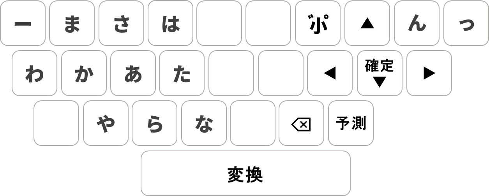
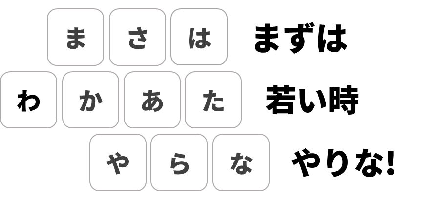
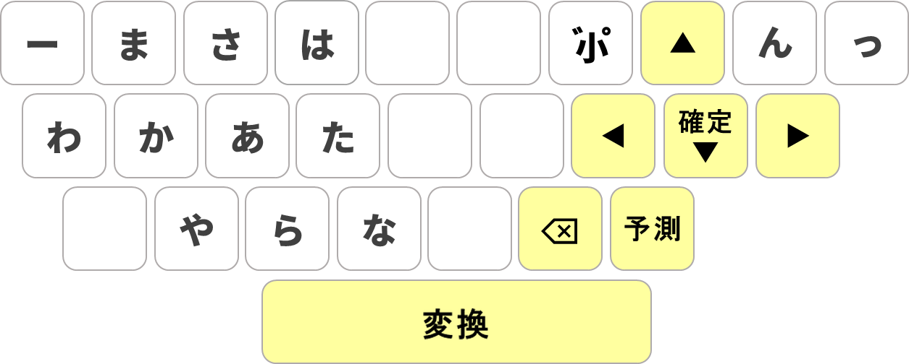

PCでも、フリック。
若いと、ワカイトキー。
βテスター募集
あなたと友だち3人、ずっと無料。
正式リリースの前に、ワカイトキーをいち早く使って、一緒に育てていく最初のメンバーです。
群れの中で最初に海へ飛び込むペンギンのように、新しいスタンダードに真っ先に飛び込む人たち。
だから「ファーストペンギン0期生」。
🎁
正式版になっても、あなたはずっと無料
一般向け個人料金（予定：年額980円・税込）がかかりません。
🎟️
友だちに贈れる「ずっと無料チケット」3枚
正式版リリース時にお渡しします。リリース後3か月以内にご利用ください。
🚀
新機能をだれよりも先に
新しい機能は、0期生から先にお届けします。
0期生へのお願い
送り方：タスクトレイのワカイトキーのアイコンを右クリック →「フィードバックを送る」、または こちらから。
ご注意
動作環境：Windows 10 / 11 ／ Microsoft IME または Google 日本語入力 ／ ローマ字入力
左手にテンキー、
右手でフリック
フリックアダプター

いまお使いの日本語入力に付けるだけで、ローマ字の代わりにフリックで入力できるようになります。
いつもの日本語入力
Microsoft IME
Google 日本語入力
いつもの日本語入力
Microsoft IME ／ Google 日本語入力

